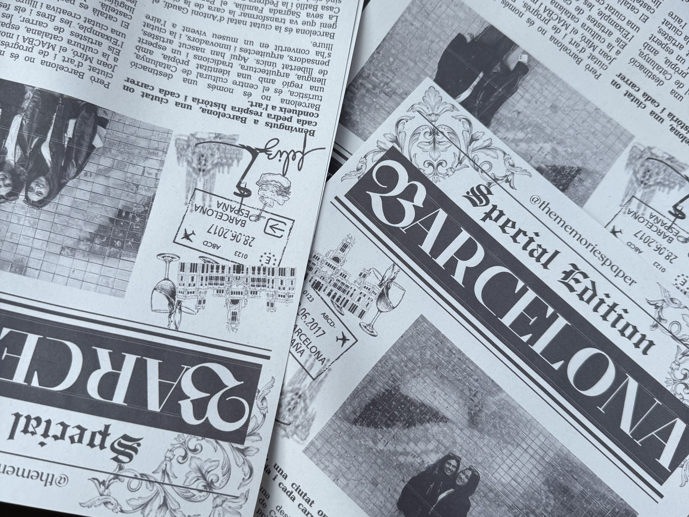

What I Enjoy Learning About

One of the things that I had mentioned previously that I enjoy doing is traveling. Most recently, I went to Barcelona and London for a week to go an visit my friends and it was one of my favorite experiences. Being my first time in Barcelona, I wasn't sure what to expect but the city exceeded my expectations. Filled with great food, great people and even better architecture. One of my favorite things that I did while I was there was getting to see La Sagrada Familia in person. One of the greatest pieces of architecture in all of human history was even more stunning to see in person. You could see the hundreds of years of craftsmanship put into the basilica and it was truly a one of a kind experience.
Some of my other interests include:
- Fashion
- Picking up new hobbies
- Data Visualization
- Business and data analysis
- Working out
- Trying new restaurants